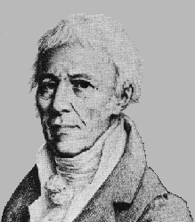
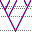

LAMARC - Likelihood Analysis with Metropolis Algorithm using Random Coalescence
|
![[LAMARC logo]](graphics/lamarc.gif)
|
|
LAMARC is a program which estimates
population-genetic parameters such as population size, population growth
rate, recombination rate, and migration rates. It approximates a summation
over all possible genealogies that could explain the observed sample, which
may be sequence, SNP, microsatellite, or electrophoretic data. LAMARC and
its sister program Migrate are successor programs to the older programs
Coalesce, Fluctuate, and Recombine, which are no longer being supported.
The programs are memory-intensive but can run effectively on workstations;
we support a variety of operating systems.
|
|
The LAMARC package is not in any immediate sense derived
from the work of Jean Baptiste Pierre Antoine de Monet, Chevalier de
Lamarck (1744-1829). The similarity of names is mostly
accidental. But all evolutionary biologists do owe him a debt. Lamarck is
an unfairly maligned figure. In addition to being one of the greatest
figures of invertebrate biology, he was one of the founders (with Buffon) of
the theory of evolution, and the first to propose a mechanism for evolution.
You may want to read more about his
life and work. | 
|
|
This material is based upon work supported by the National Science
Foundation under Grant No. 0814322. Any opinions, findings, and
conclusions or recommendations expressed in this material are those of the
author(s) and do not necessarily reflect the views of the National Science Foundation.
|
News and Updates
|
January 15, 2016
|
Corrected source download for Lamarc 2.1.10
Previous releases of this version omitted Makefiles and other files
needed to compile Lamarc from source code. Unless you are trying (and
failing) to do so, there is no need to update.
|
|
September 3, 2014
|
Lamarc 2.1.10.
This is a minor bug fix release. The bug fixed is:
- FIXED: lam_conv file converter reversed source and
destination populations when using custom migration
matrices. If you used a custom matrix to set asymmetrical
migration rates in any prior version, you will need to
re-convert your files and re-run your analysis. All
other results are unaffected.
|
|
December 11, 2013
|
Lamarc 2.1.9,
This is an important bug fix release. Bugs fixed are:
- FIXED: multiple severe bugs in inference of population
divergence. All analyses involving population divergence
should be re-run.
- FIXED: failure of DNA or SNP runs with invariant loci. If
your run completed successfully you did not encounter this
bug and re-running is not necessary.
- FIXED: lam_conv file converter wrote a multi-population
XML file for some single-population cases. If your converted
file led to a successful run you did not encounter this bug
and re-running is not necessary.
|
|
January 7, 2013
|
WARNING: The inference of population divergence in Lamarc 2.1.8 contains a serious
bug. We are working on a fix and will release it as soon as possible. In the meantime,
please do not rely on any results involving divergence (other functionality is not
affected). We apologize for this error.
|
May 29, 2012
|
Lamarc 2.1.8,
This is an important bug fix
and new feature release. Bugs fixed are:
- FIXED: major bug for all runs modeling migration.
All runs which inferred migration should be re-run.
In addition, a bug in the reporting of migration
start values has been fixed.
- FIXED: bug affecting runs sampling a significant number
of trees modeling negative growth.
Runs modeling growth should
be re-run unless they were Bayesian runs with growth
priors not allowing negative growth.
New features and improvements are:
|
|
January 21st, 2011
|
Lamarc 2.1.6,
This is an important bug fix release. Bugs fixed are:
- FIXED: major bug with data likelihood calculations for runs
modeling recombination. All runs which inferred recombination
rate or held it to a non-zero value in
versions 2.1.2 through 2.1.5 should be re-run.
- FIXED: calculation of invariant data term for SNP data
modeled with a per-base error rate.
All 2.1.5 runs which used the data uncertainty model on
SNP data should be re-run.
- UPDATED: random number generator to use the Boost library,
and added guards against returning values of exactly 0 or 1
for double values.
No previous runs need be re-done, but if you had a data set
with an unexplained crash, this may fix it.
|
|
May 10th, 2010
|
Lamarc 2.1.5,
This is a minor bug fix/enhancement release. Improvements include:
- Improved output reporting
- Compiles with g++ 4.3.3
- Minor user experience improvements
- data uncertainty model (beta test)
|
|
March 4, 2009
|
Two publications relevant to Lamarc:
|
|
General
All methods presented here use the coalescence theory of Kingman (1982a, b) and estimate population
parameters like effective population size, growth rate, migration rate. To
achieve this, the methods sample random genealogies of sequences (or
alleles) and calculate the parameters. Since this is an integration over
almost an infinitely large tree space, the methods use a Metropolis Monte
Carlo sampling technique to concentrate the sampling in regions which
contribute to the final result.
LAMARC is written in C++
and is also available as executables for Windows, MacOS and
Linux. It will compile on most workstations. You can find more
information to the individual programs following the links below:
|
Programs available:
|
|
Lamarc estimates the effective
population sizes, population exponential growth rates,
migration rates, and per-site recombination rate of
n populations using DNA, SNP, microsatellite, or electrophoretic
data. It can also perform trait mapping. (Last update:
July 2008)
|
![[Migrate icon]](graphics/migrate.gif)
|
Migrate
estimates the effective population sizes and migration
rates of n constant populations using nonrecombining
sequence, microsatellite or enzyme electrophoretic data. Migrate is now
maintained by Peter Beerli at Florida State University.
|
Older programs (for reference):
|
|
Recombine estimates the
effective population size and per-site recombination rate of
a single constant-size population using sequence or SNP data.
(last updated: June 2002)
|
|
|
Fluctuate estimates the
effective population size and a exponential growth rate
of a single growing population using nonrecombining sequence data.
(last updated: September 2002)
|
|

|
Coalesce estimates the effective
population size of a single constant population using
nonrecombining sequences. (last updated: September 1995)
|
Papers and Posters available:
|
|
|
Paper introducing LAMARC 2.0 (also available from the Bioinformatics
web site).
|
|
|
|
Poster presented at the EVO-WIBO meeting 2006 in Port Townsend, Washington .
|
|
|
|
Paper about Migrate (n-population version).
|
|
|
|
Paper about Migrate (2-population version).
|
|
|
|
Paper about Fluctuate.
|
|
|
|
Paper about Coalesce.
|
Go back to:
Get help:
Mary K. Kuhner & Jon Yamato
mkkuhner@uw.edu
Department of Genome Sciences,
University of Washington, Box 355065,
Seattle, WA 98195-5065, USA.
Phone: (206) 543-8751,
fax: (206) 685-7301
University of Washington Terms of Use